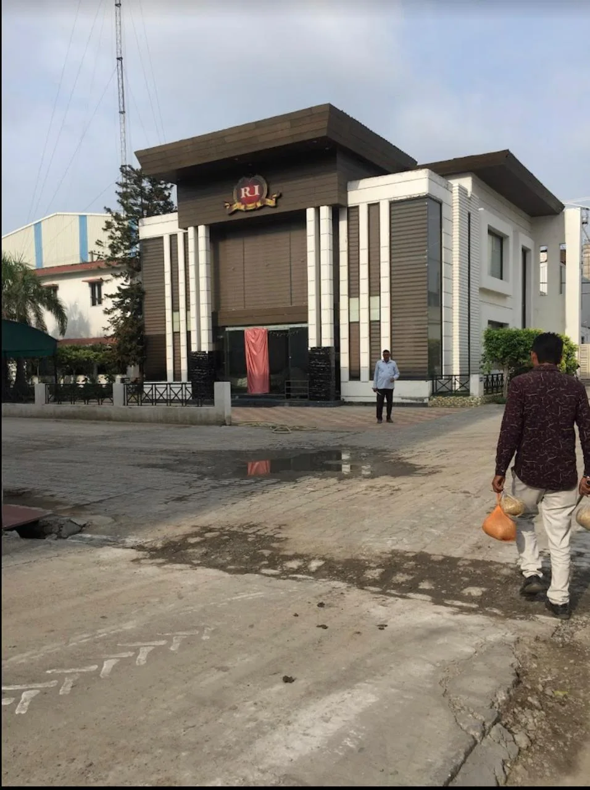
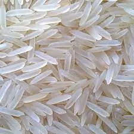
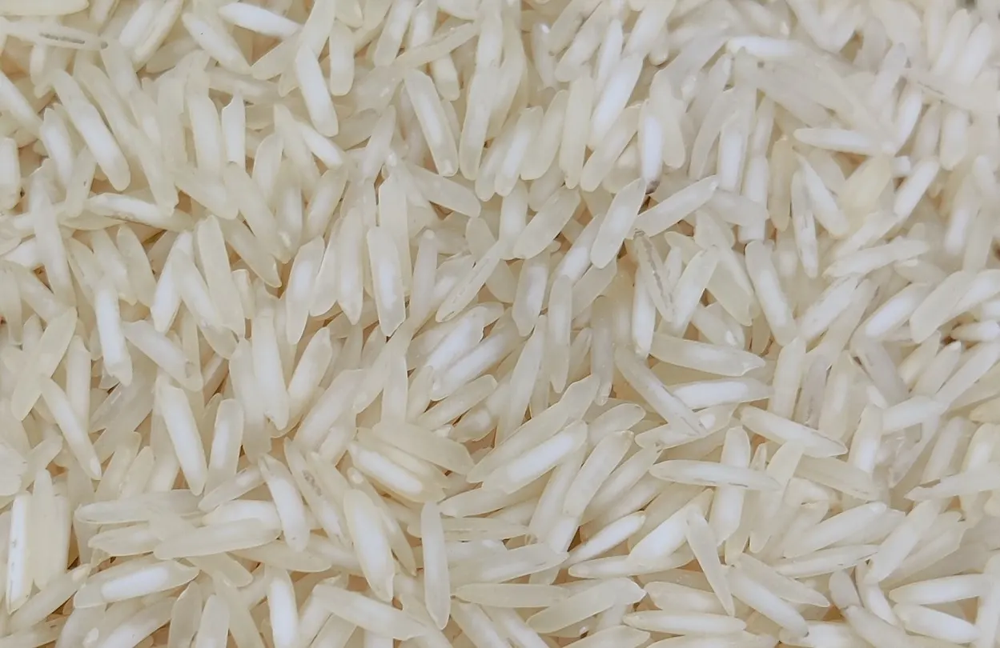

Define the rice
Variety, processing style, crop, grain length, moisture, broken tolerance, packing and volume.
See a specification pageKarnal, India · International buyer desk
UrbanFresh is a family-operated rice mill established in 1978. We help importers, distributors and merchant exporters evaluate basmati rice against product, quality, packing and destination requirements before quotation.

A buyer-verification website
A meaningful rice quote depends on the variety, process, crop, quantity, destination, pack and accepted quality limits. This site keeps those decisions visible instead of hiding them behind a generic product catalogue.
The sourcing path
Each step exists to reduce ambiguity before production, testing, packing and shipment commitments are made.
Variety, processing style, crop, grain length, moisture, broken tolerance, packing and volume.
See a specification pageShare destination rules, residue limits, required documents, lab expectations and labelling constraints.
Review quality questionsAccept the current sample, specification, evidence, commercial terms and shipment plan in writing.
Start an RFQInitial export range
These pages do not publish a universal specification. They show the fields that must be confirmed for the offered crop and lot.

Raw, steam, sella and golden sella enquiries.
Build the 1121 brief
Compare processing and lot-specific quality fields.
Build the 1509 brief
Define grain, processing, residue and packing needs.
Build the 1401 briefEvidence before assurance
“Export quality” is not a specification. Buyers should send the applicable residue limits and document checklist. UrbanFresh then confirms what current evidence can be supplied for the proposed order.
Send the rice, specification, volume, packing, destination and shipment window in one RFQ.